🗓️ חגים ומועדים
משחקים, חידונים, הלכות ומקורות לפי סדר השנה.
אלול, ראש השנה ויום כיפור
סוכות
חנוכה
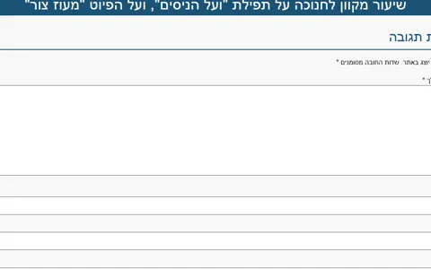
"ועל הניסים" ו"מעוז צור" – שיעור מקוון לחנוכהשיעור · חמדת ימיםhemdat-yamim.co.il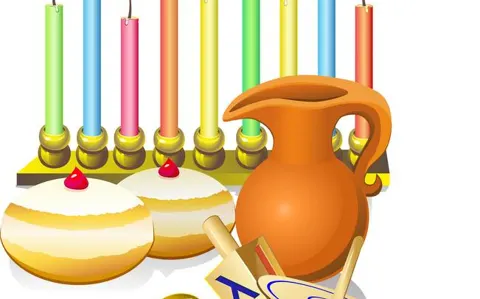
חידון חנוכהחידון · Kahoot – חידון כיתתיcreate.kahoot.it- חידון חנוכה – ממ"ד מורשת, תשע"וחידון · Kahoot – חידון כיתתיcreate.kahoot.it
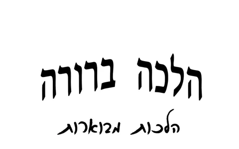
הלכות מבוארות – חנוכהPDF · חוברת, 26 עמודיםmin-hahar.co.il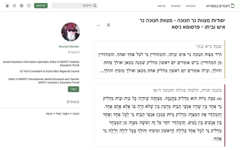
יסודות מצוות נר חנוכהדף מקורות · דף מקורות בספריאchiburim.sefaria.org.il
ט"ו בשבט
פורים
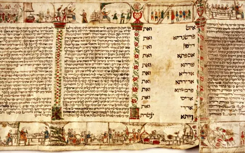
חידון לפוריםחידון · Kahoot – חידון כיתתיcreate.kahoot.it- פאזל טריוויה לפוריםמשחק · CloseApppash.closeapp.co.il
- חדים בפורים – מתיחת קומשחק · CloseApppash.closeapp.co.il
- חדר בריחה לפורים – "בחזרה לאיראן"משחק · לומדים יהדות באהבהravdavids.com
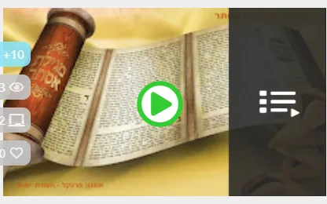
לימוד מקיף על מגילת אסתר – שיעורים מקווניםשיעור · חמדת ימיםhemdat-yamim.co.il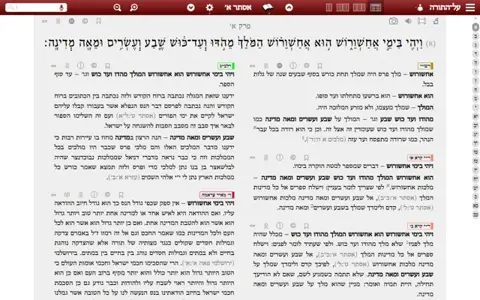
מגילת אסתר – מקראות גדולותספר · על התורהmg.alhatorah.org
פסח
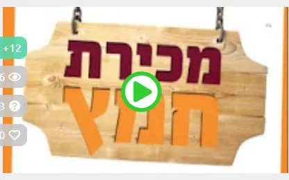
מכירת חמץ – שיעור מקווןשיעור · חמדת ימיםhemdat-yamim.co.il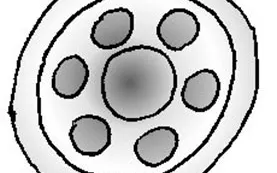
סימני הסדרמשחק · CloseApppash.closeapp.co.il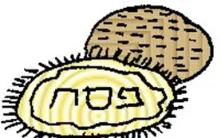
מצות אותיותמשחק · CloseApppash.closeapp.co.il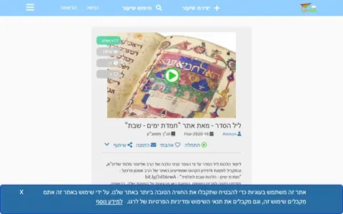
ליל הסדר – שיעור אינטראקטיבישיעור · LerGO, מאת "חמדת ימים – שבת"lergo.org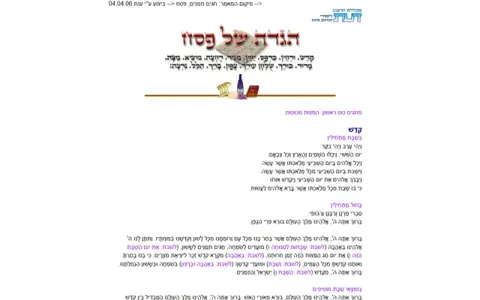
הגדה של פסחספר · אתר דעתdaat.ac.il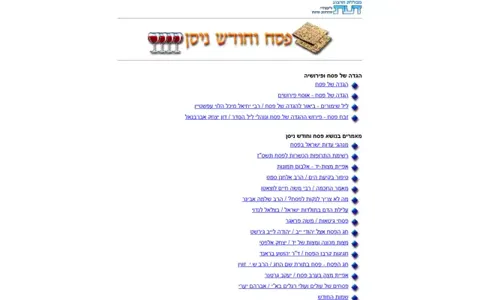
פסח וחודש ניסןמאמר · אתר דעתdaat.ac.il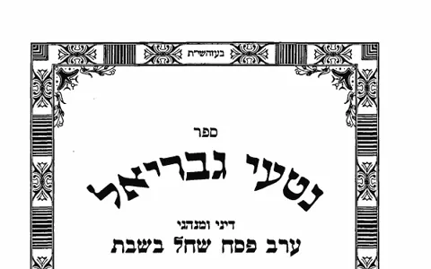
נטעי גבריאל – דיני ומנהגי ערב פסח שחל בשבתספר · הרב גבריאל ציננערhebrewbooks.org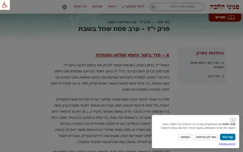
ערב פסח שחל בשבת – פניני הלכה, פרק י"דספר · הרב אליעזר מלמדph.yhb.org.il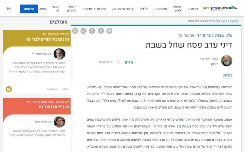
דיני ערב פסח שחל בשבתמאמר · תורת הר עציוןetzion.org.il
ספירת העומר ול"ג בעומר
יום העצמאות
⚖️ הלכות שבת ומצוות
שיעורים מקוונים, חידונים ומצגות מאתר "חמדת ימים".
מלאכות שבת
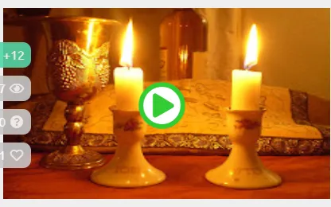
פתיחה ללימוד מלאכות שבתשיעור · חמדת ימיםhemdat-yamim.co.il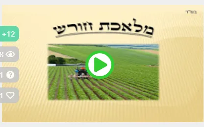
מלאכת חורששיעור · חמדת ימיםhemdat-yamim.co.il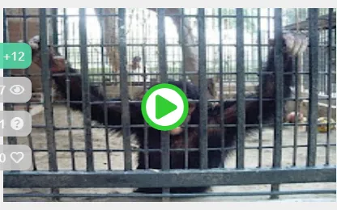
מלאכת צידהשיעור · חמדת ימיםhemdat-yamim.co.il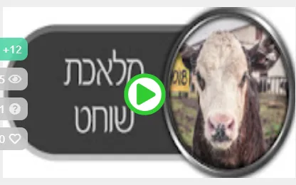
דיני שוחט בשבתשיעור · חמדת ימיםhemdat-yamim.co.il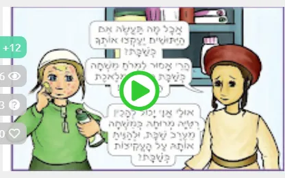
מלאכת ממחקשיעור · חמדת ימיםhemdat-yamim.co.il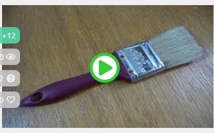
מלאכת צובעשיעור · חמדת ימיםhemdat-yamim.co.il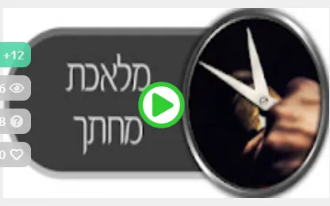
מלאכת מחתךשיעור · חמדת ימיםhemdat-yamim.co.il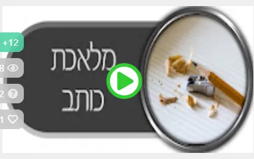
מלאכות כותב ומוחקשיעור · חמדת ימיםhemdat-yamim.co.il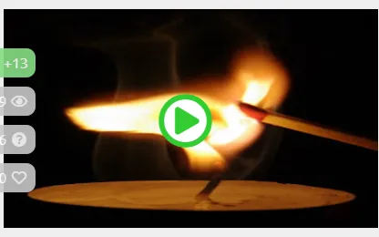
מלאכת מבעירשיעור · חמדת ימיםhemdat-yamim.co.il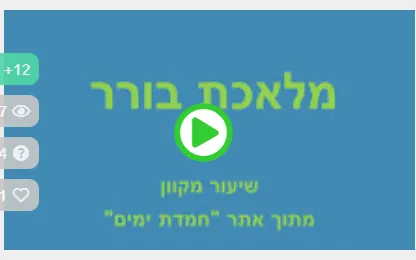
דיני בורר בשבתשיעור · חמדת ימיםhemdat-yamim.co.il
הלכות שבת נוספות
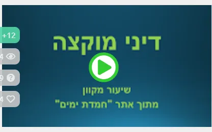
דיני מוקצהשיעור · חמדת ימיםhemdat-yamim.co.il- דיני שבת שנקבעו על ידי נביאיםשיעור · חמדת ימיםhemdat-yamim.co.il
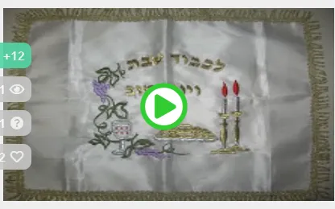
כבוד שבת ועונג שבתשיעור · חמדת ימיםhemdat-yamim.co.il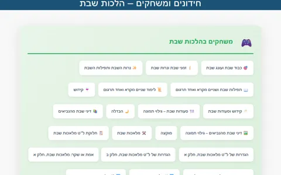
חידונים ומשחקים – הלכות שבתחידון · חמדת ימיםhemdat-yamim.co.il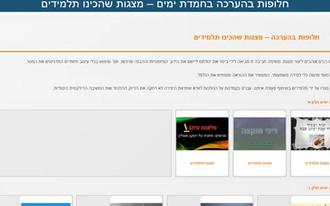
מצגות שהכינו תלמידים (חלופות בהערכה)מצגת · חמדת ימיםhemdat-yamim.co.il
🌾 שמיטה
ספרים, מאמרים וקורס הלכתי על שנת השמיטה.
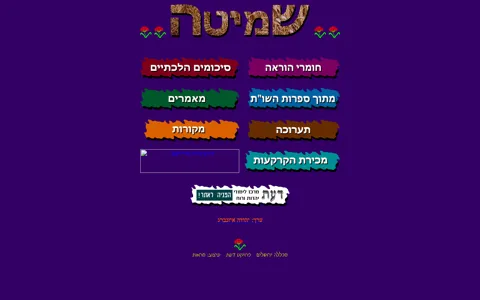
אתר השמיטהאתר · אתר דעתdaat.ac.il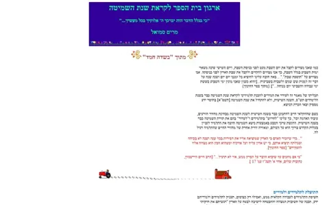
ארגון בית הספר לקראת שנת השמיטהמאמר · מרים סמואל, אתר דעתdaat.ac.il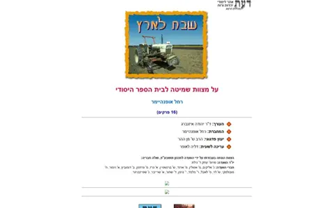
שבת לארץספר · אתר דעתdaat.ac.il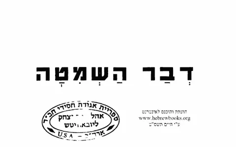
דבר השמיטהספר · הרב משה צבי נריהhebrewbooks.org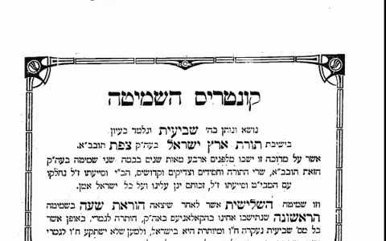
קונטרס השמיטהספר · הרידב"זhebrewbooks.org- שיטות הגידול החדשות המסייעות לשמירת השמיטהספר · יואל שורץhebrewbooks.org
- שמיטה, זה הזמן שלך! – קורס בהלכות שביעיתשיעור · ארץ חמדה – סדרת שיעורים בקובצי PDFעותק שמורeretzhemdah.org
🎯 משחקי פרשת השבוע
"משחק השבת" של CloseApp: משחק אחד או שניים לכל פרשה, בלי הרשמה. לוחצים על שם המשחק והוא נפתח.
חומש בראשית
- בראשיתזיכרון: בריאת העולםמעגל שאלות
- נחמצא את ההבדליםמסלול
- לך לךמסעות אברהםאל מי נאמר
- ויראאשת מלחגרירת תשובות
- חיי שרהמספרים בפרשהתמונה ותשובה
- תולדותתפזורתמי הדמות
- ויצאמשחק לפרשהדמויות בפרשה
- וישלחמשחק לפרשהמשחק נוסף
- וישבגילוי תמונהתמונות בפרשה
- מקץמשחק לפרשהמשחק נוסף
- ויגשנכון / לא נכוןעל מי נאמר
- ויחיסמלי שבטי ישראלברכות השבטים
חומש שמות


חומש ויקרא
- ויקראמגדל קרבנות
- צומראה כהן גדול
- שמיניחיות טהורות וטמאות
- תזריעמשחק לפרשה
- מצורעסדר טהרת המצורע
- אחרי מותעוגות מילים
- קדושיםמצוות התלויות בארץ
- אמורמשחק לפרשה
- בהרשמיטה, יובל ועוד
- בחוקותישאלות א–ב
חומש במדבר
- במדבראיש על דגלו
- נשאקוביות במקום הנכון
- בהעלותךמה נכון?
- שלח לךמסעות המרגלים
- קרחמסלול
- חקתלמקום הנכון
- בלקמי אמר
- פנחסמבחנות ומשפחות
- מטותנחלות השבטים
- מסעימסעות בני ישראל
חומש דברים
- דבריםהאחרון הוא הנכון
- ואתחנןקריאת שמע
- עקביוצא דופן
- ראהזזים באותיות
- שופטיםמעגל תשובות
- כי תצאנושאים בפרשה
- כי תבואברכות וקללות
- נצביםמה נכון
- וילךמתיחת קו

📜 גדולי ישראל
ספרים, שיעורים, כתבות וערכים על רבנים ואנשי תורה.
הרב משה צבי נריה והרבנית רחל נריה
- הרב משה צבי נריה – ערךמאמר · ויקישיבהyeshiva.org.il
- מו"ר הרב משה צבי נריהשיעור · הרב זלמן ברוך מלמדyeshiva.org.il
- יסוד הדור ויוצרושיעור · הרב הראל כהןyeshiva.org.il
- השָּׁם אורחותיושיעור · הרב הראל כהןyeshiva.org.il
- הרב נריה וחב"דשיעור · הרב הראל כהןyeshiva.org.il
- בני הישיבות וגיוסםספר · הרב משה צבי נריהhebrewbooks.org
- דברים לזכרו של הרב משה צבי נריה זצ"למאמר · ערוץ 7inn.co.il
- הקלטה נדירה: הרב נריה מברך את אשתומאמר · ערוץ 7inn.co.il
- הלכה עם הרב נריה זצ"ל באש ובמיםמאמר · ערוץ 7 – נכדה מספר על הרבנית רחל נריהinn.co.il
- 'האמא של הכיפות הסרוגות'מאמר · ערוץ 7 – הרב אליעזר וייס על הרבנית רחל נריהinn.co.il
- אהבה מקודשתמאמר · ערוץ 7 – מכתבי האירוסין של רחל ומשה צבי נריהinn.co.il
הרב שאול ישראלי
- הרב שאול ישראלי – ערךמאמר · ויקישיבהyeshiva.org.il
- חוות בנימין – חלק אספר · שו"תhebrewbooks.org
- חוות בנימין – חלק בספר · שו"תhebrewbooks.org
- חוות בנימין – חלק גספר · שו"תhebrewbooks.org
- שיעורי הגר"ש ישראליספרhebrewbooks.org
- פרקים במחשבת ישראלספרhebrewbooks.org
- התורה והמדינה – חוברת 1 (ניסן תש"ט)ספר · בעריכת הרב ישראליhebrewbooks.org
- התורה והמדינה – חוברת 2 (תש"י)ספר · בעריכת הרב ישראליhebrewbooks.org
- התורה והמדינה – חוברות 7–8 (תשט"ז)ספר · בעריכת הרב ישראליhebrewbooks.org
הרב מאיר יהודה גץ, רב הכותל
- הרב מאיר יהודה גץ – ערךמאמר · ויקישיבהyeshiva.org.il
- לוחם על משמרת הקודש – הרב גץשיעור · הרב אליעזר מלמדyeshiva.org.il
- אזכרה לרב גץוידאו · הרב שאר ישוב כהןyeshiva.org.il
- הרב מאיר יהודה גץ – רב הכותלמאמר · שו"ת מורשת, הרב יצחק בן יוסףעותק שמורshut.moreshet.co.il
- ישיבת המקובלים בית אל – ערךמאמר · ויקישיבהyeshiva.org.il
הרב יצחק נסים
הרב בן ציון מאיר חי עוזיאל
הרב שלמה זלמן אויערבך
הרב פתחיה מנקין
הרב עובדיה יוסף
הרב יוסף קאפח
רבנים נוספים
- הרב שלמה גורן – ערךמאמר · ויקישיבהyeshiva.org.il
- הרב חיים דוד הלוי – ערךמאמר · ויקישיבהyeshiva.org.il
- הרב שמואל מוהליבר – ערךמאמר · ויקישיבהyeshiva.org.il
- הרב מרדכי אליהו מספר על הבבא סאליוידאו · סרט נדיר, אתר ישיבהyeshiva.org.il
- בדרך היושר והאמתשיעור · יואל יעקובי, אתר ישיבהyeshiva.org.il
- זהה את הרבנים הראשיים לישראלחידון · Wayground (לשעבר Quizizz)wayground.com
- הרב יעקב מאיר – חידוןחידון · Wayground (לשעבר Quizizz)wayground.com
🤝 יהודי אתיופיה
מאמרים באתר דעת.
📖 ספריות ומקורות
ספריות טקסטים, מפרשים ולימוד יומי.
ספריות ומקראות
- ספריא – ספרייה חיה של טקסטים יהודייםאתרsefaria.org.il
- מקראות גדולותאתר · על התורהmg.alhatorah.org
- ש"ס עם מפרשיםאתר · על התורהshas.alhatorah.org
- גמרא סדורהאתר · הגמרא בעברית מבוארתgemarasdura.com
- רצים למשנהאתר · סולמות VODmishnarun.org
- פורטל הדף היומיאתרdaf-yomi.com
- החכם היומיאתר · מאגר לספרות יהודי ספרדhyomi.org.il
- מדרשת – דפי לימודדף מקורות · אסופה בספריאchiburim.sefaria.org.il
הספרייה הלאומית
🎲 משחקים וכלים לכיתה
אתרי חידונים ומחוללי משחקים למורה.
- תורתך שעשועי – אתר חידוניםחידון · כ-4,500 שאלות, דורש הרשמהchidonim.org.il
- המשחקינוך – משחקים לפרשת השבועמשחק · לומדים יהדות באהבהravdavids.com
- לכבודה של ירושלים – משחקיםמשחק · לומדים יהדות באהבהravdavids.com
- לומדים יהדות באהבה – הבלוגמאמר · נקודה שבועית מפרשת השבועravdavids.com
- 1 נגד 100משחק · טלם – בונים משחק כיתתי ומשחקים בקוד1vs100.telem-hit.net
- קפוץ לקרחוןמשחק · טלם – בונים משחק כיתתי ומשחקים בקודicebergjump.telem-hit.net
- בית המלמדיםאתרhamelamdim.org.il
- מרכז הלכה והוראהאתר · סולמות – להוראת הלכהhalachaveoraha.sulamot.org
🏛️ מוסדות ואתרים
לא נמצא דבר. נסו מילה אחרת, או חיפוש בכל קטלוגי האתר.